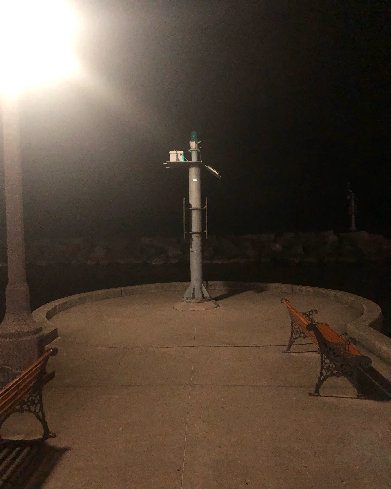
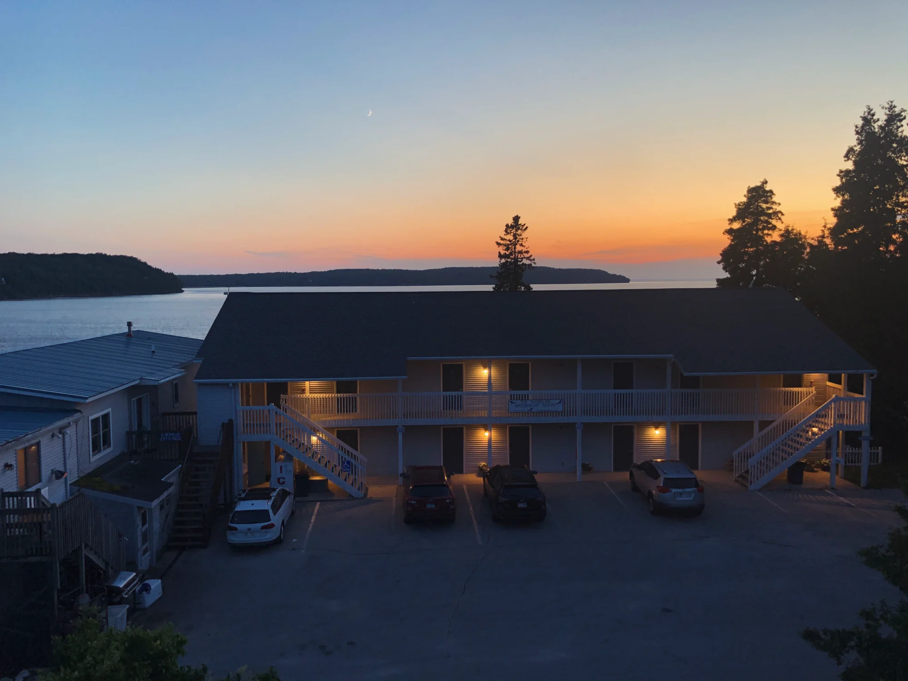
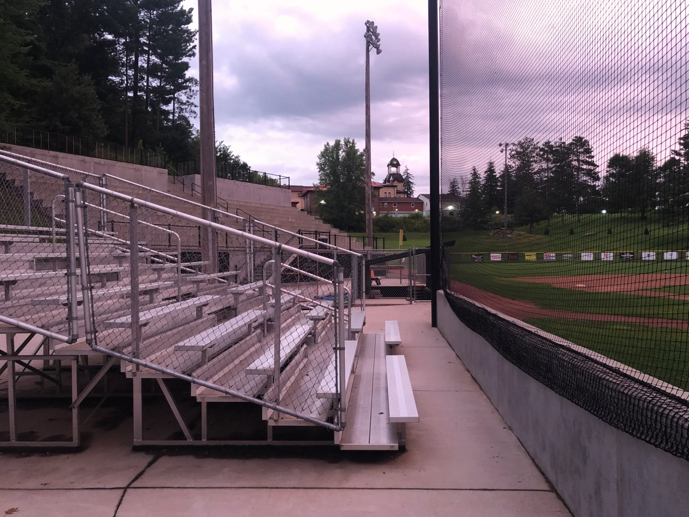

About Me
I'm a software quality engineer who dabbles in keep-it-simple photography in my time outside of work. I reside in southwest Wisconsin, in the area known as the Driftless. I enjoy time spent outdoors, whether it's my work-from-home lunch walk or a weekend outing to one of the state's beautiful parks. When I can find the time for it, I also like reading poetry, especially modern styles where the language reflects the life of a person. I hope this page, in some small part, reflects my life; the methodical, challenging, creative and technical world of a tester with moments of appreciation for the color, beauty, and living art around us.
Photography Portfolio



Software Testing Demos
These demos test this portfolio website itself - bringing together my professional work in quality assurance with my personal creative pursuits.
Live Performance Testing Dashboard
Real-time performance analysis of this portfolio website using browser Performance APIs. Click below to run a comprehensive performance audit including load times, Core Web Vitals, image optimization, and network metrics.
Live Functional Testing Suite
Automated test suite that validates all interactive elements on this page. Tests button clicks, state changes, results display, hover effects, and complete user flows for both Performance and Accessibility testing features.
Note: These are structural validation tests that verify elements exist and are properly configured. In real-world software testing, I would use tools like Selenium or Playwright to run full end-to-end interactive tests in automated testing pipelines.
Live Accessibility Testing (WCAG 2.1)
Real-time accessibility audit scanning this portfolio site for WCAG 2.1 Level AA compliance issues. Checks for missing alt text, color contrast, heading structure, keyboard navigation, ARIA labels, and more.
Get In Touch
I'm always interested in connecting with fellow photographers and software testing professionals. Feel free to reach out!
LinkedIn: linkedin.com/in/mark-sherman-322484164